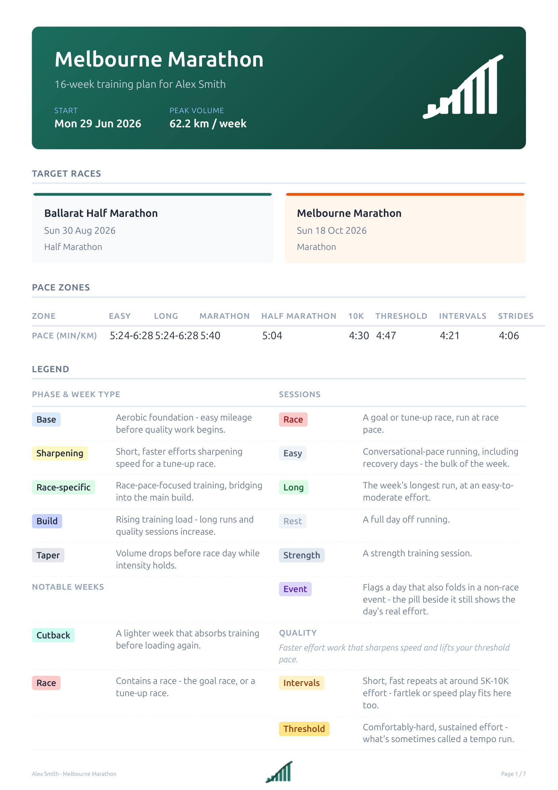

RunDrafter
Tell us the race. We'll draft the training.
RunDrafter turns a goal race and the week you actually have into a
periodised training plan - phase lengths, weekly volume, and
session-by-session paces, grounded in established training
methodology and written up by an AI model. Fill in the form below
and download the intake.json it produces; email it in
and a person runs the pipeline and replies with your plan - this
is not instant, so expect a wait of a few days, not a
download.
See a sample plan

intake.json downloaded
Attach the downloaded intake.json to an email and send
it in to continue.
Return address:
This file travels by ordinary email, including your fitness details - please only send it to the address above.